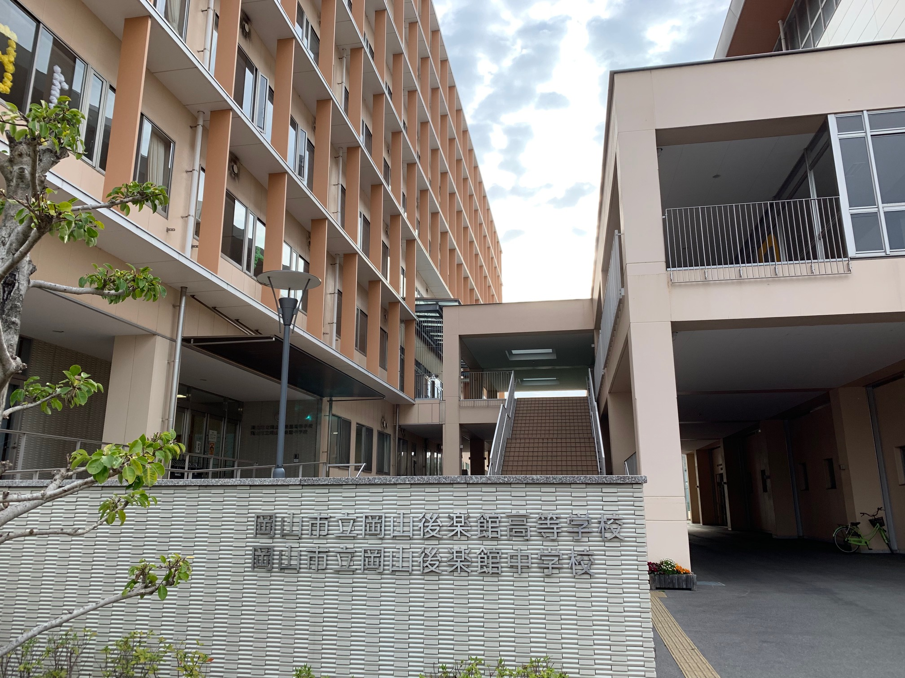

杉山 光輝の出身校紹介ページ(作成者：野村 奈央)

学校紹介
学校名：岡山後楽館高等学校
所在地： 〒700-0807 岡山市北区南方一丁目3-15
設立： 1999年 創立25年
共学・別学： 男女共学
特徴： チャイムがない、中高一貫、シティキャンパスでプレゼンみたいな授業がある
クラス： 三年間一組
学科： 総合学科、授業の内容を自分で選択して選べる
部活：コンピュータ部
班員からのコメント
逢澤：チャイムが無いことに驚いた。時間間隔鍛えられそう。
岡本：地域に根ざした素晴らしい学校。
野村：中高一貫でいいなと思いました。
その他の班員一覧
逢澤
岡本
野村
TOPに戻る